Screen specs
Layout, controls, states and rules for each screen of the OneCore RoPA prototype, taken from the running build. Numbers on the screenshots match the numbered notes under them. Component details are in the OneCore component inventory; testable behaviour is in the acceptance criteria.
App shell
Data Mapping's frame: a dark side navigation and a light top bar. Demo mode trims the navigation to the AI page for presentations.
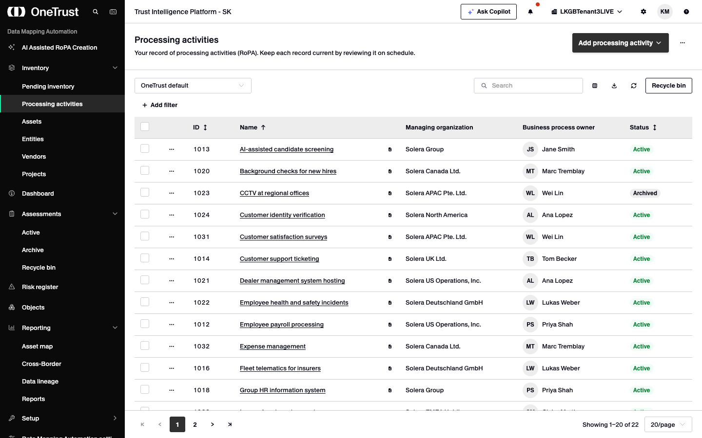
- Header row, 48px: logo (links home), then Search (no action yet) and Collapse navigation.
- Collapse animates the sidebar from 256px to a 48px rail. Icons keep their x-position.
- Groups start closed. Chevron rotates −90° when closed;
aria-expandedreflects state. - Active item:
--oc-inverse-activefill, 2px--oc-brandbar, brand icon, weight 500. - Top bar, 48px: tenant name, Ask Copilot, notifications, org switcher, settings, account, help. All placeholders.
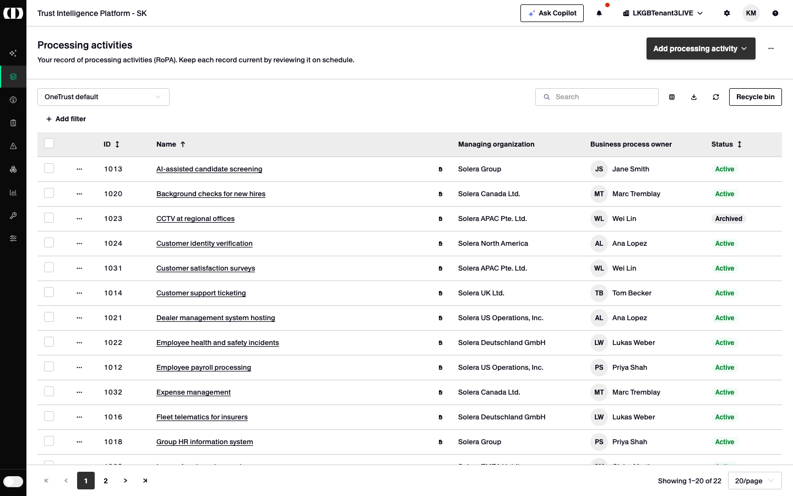
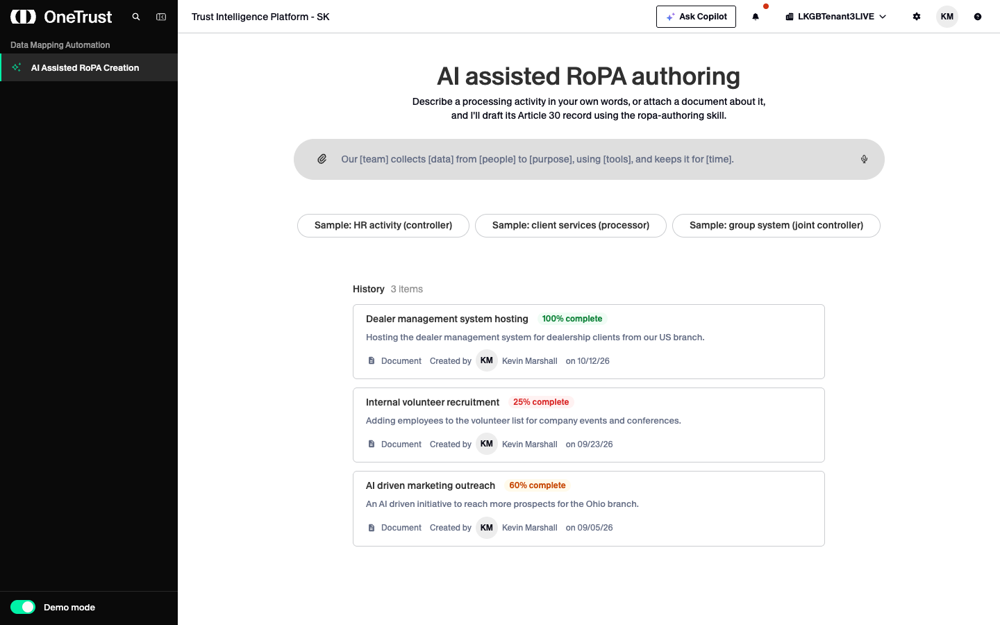
Layout
| Sidebar | 256px expanded, 48px collapsed. Background --app-sidebar-bg (#0a0a0a, local: OneCore has nothing this dark). Text --oc-foreground-on-dark, --oc-font-size-sm. |
|---|---|
| Motion | Width: --oc-motion-duration-settle + --oc-motion-easing-decelerate. Labels fade with --oc-motion-duration-micro. All off under reduced motion. |
| Nav rows | 40px (nested 36px), 2px apart, 18px outline icons inset 15px. Hover --oc-inverse-hover; focus 2px --oc-brand outline at −2px. |
| Module name | "Data Mapping Automation", --oc-font-size-xs, 60% opacity. Always visible, in and out of demo mode. |
| Footer | Demo mode oc-switch, on-track recoloured to --oc-brand. On the rail only the switch shows. |
| Top bar | 48px, padding 0 spacing-3 0 spacing-5, bottom border --oc-border. |
Rules
- Routes: / redirects to /ai-assisted-ropa when demo mode is on, /processing-activities when off. Unknown routes show a "Not built yet" placeholder titled by the nav label.
- Demo mode starts on at every page load and isn't remembered.
- A closed group shows as active when the current page is one of its children.
- Nav order: AI Assisted RoPA Creation, Inventory (Pending inventory, Processing activities, Assets, Entities, Vendors, Projects), Dashboard, Assessments, Risk register, Objects, Reporting, Setup, Data Mapping Automation settings.
- Links set
aria-current="page"; the logo has a 2px brand focus ring.
Processing activities
The RoPA: one row per Article 30 record. Entry point to both AI authoring flows.
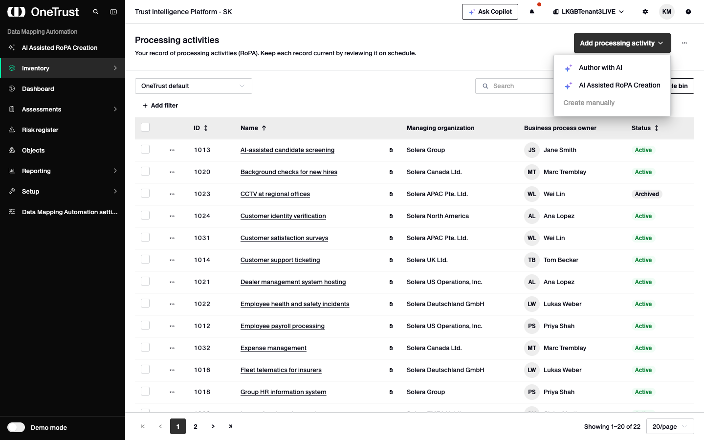
- Page header: title and description "Your record of processing activities (RoPA). Keep each record current by reviewing it on schedule."
- "Add processing activity" (primary, chevron) opens a menu: Author with AI, AI Assisted RoPA Creation, Create manually (disabled).
- "More actions" (ellipsis) holds Bulk create, Bulk update, Process gallery (placeholders). Both menus open bottom-end.
- Saved view (
oc-selectsm, 240px): OneTrust default, Overdue reviews, Due in 30 days. A bold * marks unsaved changes. - Search (
oc-inputsm, 224px, clearable): matches name, ID, managing organization and owner. Resets to page 1. - Sortable headers (ID, Name, Status) with
aria-sort. Default Name ascending; a new column starts ascending. - Row actions: Start re-certification, Create variation with AI, Duplicate, Archive (destructive).
- Status badge: Active
success, Pendingwarning, Archivedneutral. - Table footer:
oc-pagination, "Showing 1–20 of 22", rows per page 10/20/50/100 (default 20).
Columns
| Column | Width | Content |
|---|---|---|
| Select | 48px | oc-checkbox. Header selects the current page (checked or indeterminate); selection persists across pages. |
| Actions | 60px | Ellipsis icon button "Actions for {name}" with the row menu. |
| ID | 96px | Tabular numerals, sortable. |
| Name | flex | Underlined link (no destination yet) plus an xs Preview icon button. |
| Managing organization | 240px | Group entity name. |
| Business process owner | 220px | Avatar sm + name. |
| Status | 140px | Badge, sortable by label. |
Rules and states
- Table: native
table-layout: fixed, min-width 1040px (scrolls sideways when narrower), 44px rows, sticky header on--oc-secondary, hover--oc-secondary-light-hover, selected--oc-secondary-light-active. - Review status drives the saved views, not a column: next review = last reviewed + cadence (180/270/365 days) against today; past due is Overdue, within 30 days is Due soon.
- Drafts banner: when AI drafts exist, an info alert "{n} AI-drafted record(s) waiting for approval" with "Review drafts" → Pending inventory.
- Empty: "No processing activities match this view."
- Create variation with AI opens /ai-assisted-ropa?from={id} and starts the duplicate check from that record (see Duplicate check).
- Toolbar placeholders: Choose columns, Export, Refresh, Recycle bin, Add filter.
Pending inventory
Records waiting for a reviewer, including drafts submitted from Author with AI.
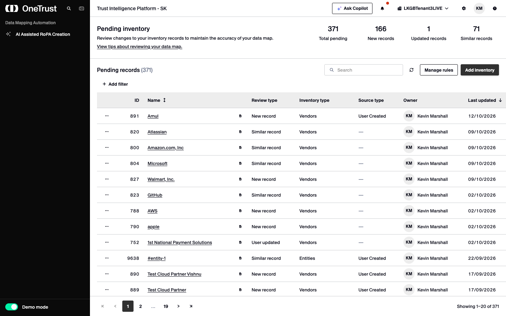
Columns
| Column | Width | Content |
|---|---|---|
| Actions | 60px | Drafts: Review and approve (disabled), Withdraw draft (destructive). Others: Approve, Reject. |
| ID | 72px | Right-aligned. |
| Name | flex | Sortable. Drafts add a purple badge "AI draft · {completeness}%". |
| Review type | 136px | e.g. New record. |
| Inventory type | 168px | e.g. Processing activities. |
| Source type | 128px | Empty shows "—" in muted text. Drafts: AI authoring. |
| Owner | 184px | Avatar + name. |
| Last updated | 136px | dd/mm/yyyy (en-GB), sortable. Default sort: newest first. |
Rules and states
- Success banner (
role="status") when ?draft matches a stored draft: "{name} is waiting for approval" / "It becomes a processing activity once a reviewer approves it." with "Back to processing activities". That draft's row is highlighted. - Other AI draft rows get a faint
--oc-secondary-light-hovertint and stay first on ties. - Search matches name and ID only. Empty: "No pending records match “{query}”."
- Table min-width 1180px. Page size fixed at 20; no selection column, no saved views.
- Stats are fixed figures plus the number of drafts, not counted from rows.
- Placeholders: View tips link, Refresh, Manage rules, Add inventory, Add filter, Approve, Reject.
Author with AI
The form-based authoring flow: describe the activity, then review a rule-based draft before sending it to Pending inventory.
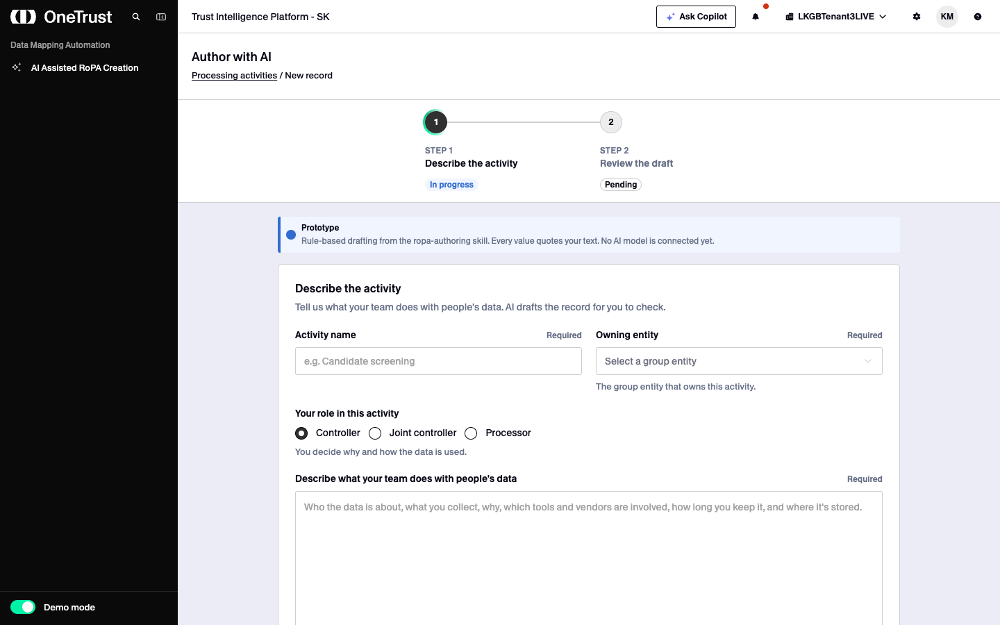
oc-path (max 480px) above a 896px column on --oc-secondary-light-hover, with a persistent info alert: "Prototype — Rule-based drafting from the ropa-authoring skill. Every value quotes your text. No AI model is connected yet."Step 1 · Describe the activity
| Control | Rules |
|---|---|
| Activity name | oc-input, required. Placeholder "e.g. Candidate screening". Error "Add a name for this activity." |
| Owning entity | oc-select, required, 8 group entities. Help "The group entity that owns this activity." Error "Choose the group entity that owns this activity." |
| Your role | oc-radio-group horizontal: Controller (default), Joint controller, Processor; help text follows the choice. |
| Description | textarea[oc-textarea], 9 rows, required. Error "Describe the activity, or upload a document." |
| Upload a document | Secondary sm, paperclip. .txt/.md/.csv or text/*; the text replaces the description and a removable tag shows "Loaded {file}". Otherwise: "The prototype reads plain-text files (.txt, .md). Paste other documents into the description." |
| Use a sample description | Tertiary sm. Fills the candidate-screening sample; sets the name if empty. |
| Draft record | Accent, ai-sparkles. Disabled until name, entity and description are filled. Shows oc-loading lg, "Drafting your record…", for 2 s. |
Step 2 · Review the draft
- Summary: name, "{Role} · {Entity}", and three stats: Complete % (orange below 80%, green at 80%+), AI suggestions, Questions.
- Suggested values: each field shows an
oc-status"{band} - {NN}%", an editable input, the evidence quote and a rationale. Editing marks it "Edited by you." Bands: high ≥ 0.85, medium ≥ 0.60, else low. - Questions: one input per missing field, with the follow-up prompt as help text.
- Linked inventory: vendors, assets and data categories named in the text, each with Accept / Reject (
aria-pressed; clicking the active one resets it). Rejected rows dim to 50%. - Completeness = filled items ÷ 13 (10 core fields + data subjects + a vendor or asset + a data category).
- Send to Pending inventory stores the draft and opens /pending-inventory?draft={id}. "Back to description" keeps values.
AI Assisted RoPA Creation · start screen
Where a user starts a new RoPA conversation or reopens an earlier one. Nothing leaves this screen until the user sends from the input.
- Title "AI assisted RoPA authoring", 36px, weight 500, tight leading; description at
--oc-font-size-md, centred. - Attach: 32px tile, light green
--oc-item-hoveron hover (Figma variant),--oc-item-activepressed. .txt/.md/.csv up to 1 MB. - AI input:
--oc-secondary-hovergrey, 30px radius, max 849px wide. Placeholder is the template prompt. - Microphone while empty; becomes the round Send button once there's text or a file.
- Sample pills: white,
--oc-border, full radius, 6px × 24px padding, 14px weight 500. - History heading with item count in
--oc-disabled-foreground. - Completeness badge: green from 80%, amber from 50%, red below 50%.
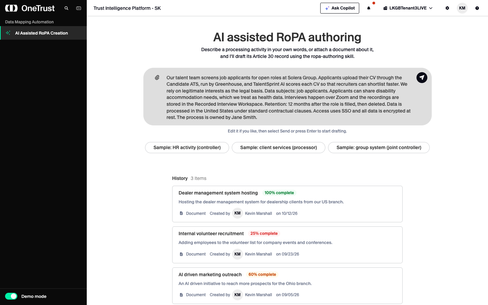
AI input
| Height | 58px minimum including border; grows with the text to 200px of text, then scrolls. Shrinks back when cleared. |
|---|---|
| Padding | 12px top and bottom, 24px left, 12px right; 12px between tiles and text. |
| Icon position | Both 32px tiles stay at the top as the field grows; the first text line is centred on them. |
| Hover | Border becomes --oc-border. |
| Focus | Background --oc-input (white), border --oc-border-focus, shadow --oc-shadow-floating (0 12px 24px, black 14%). All three ease over --oc-motion-duration-micro. |
| Send button | 32px circle, --oc-foreground (#080916) with a white paper-plane; hover --oc-primary, pressed --oc-muted. |
| Hint line | 12px muted, under the input: "Press Tab to use the template." (focused, empty) · "Edit it if you like, then select Send or press Enter to start drafting." (has text) · "Listening… Select the microphone again to stop." · file errors in --oc-border-error. |
Behaviour
- Enter sends; Shift+Enter adds a line. Tab in an empty input fills the template with "[team]" selected.
- Sample pill fills the input with one of that scenario's three variants (random), focuses it with the caret at the end, and remembers the sample's record name. It never sends.
- Attach shows the file as a removable
oc-taginside the input. Wrong type: "{file} isn't a text file. Attach a .txt, .md or .csv file." Over 1 MB: "{file} is over 1 MB." A file alone can be sent. - Dictate (en-GB) appends speech to the text; disabled with a tooltip where the browser has no speech recognition; denied microphone shows "Allow microphone access to dictate."
- History card (whole card is a button) reopens the session: the assistant drafts again from its saved description, with its record name.
- History shows three examples plus sessions started in this browser, newest first; each updates its name, summary and completeness as the conversation goes. Dates are MM/DD/YY. Source shows "Document" (
file-lines) or "Prompt" (comments). - Card hover: border
--oc-border-interactive-hover, background--oc-item-hover. Cards are 680px max, 10px × 18px padding, 6px radius.
AI Assisted RoPA Creation · chat & draft
A conversation with the OneCore assistant beside a live draft of the Article 30 record, checked by the ropa-authoring skill as it changes.
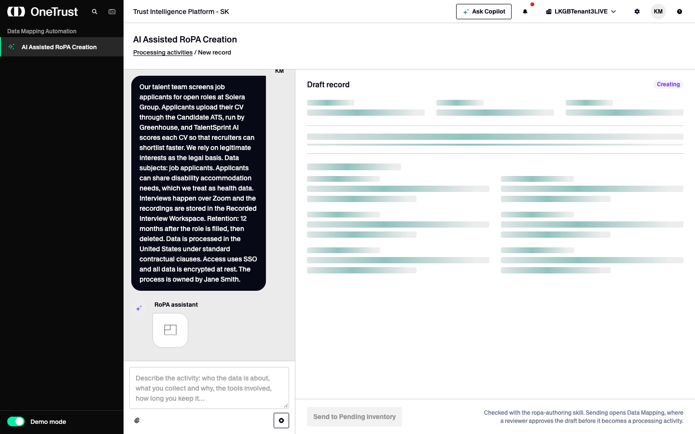
oc-skeleton and the badge reads "Creating" until the first reply finishes.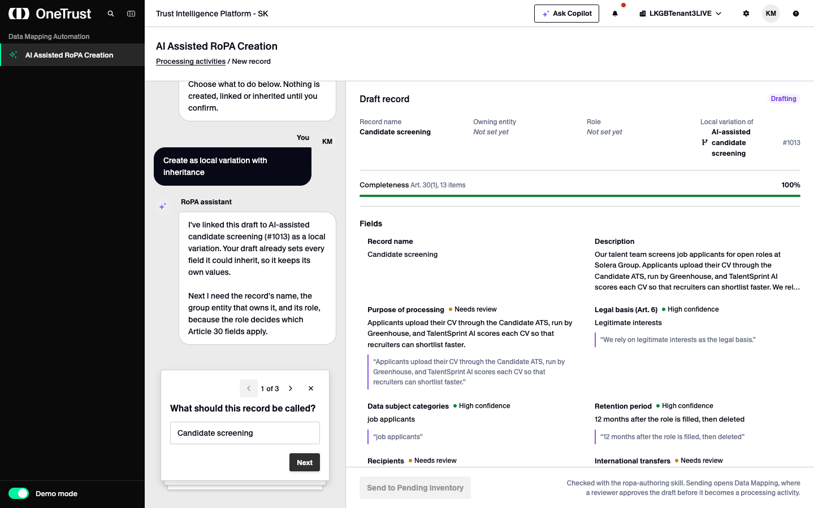
oc-assistant-steps replaces the composer: name, group entity, role (pre-selected from the text's role cue, with the quote).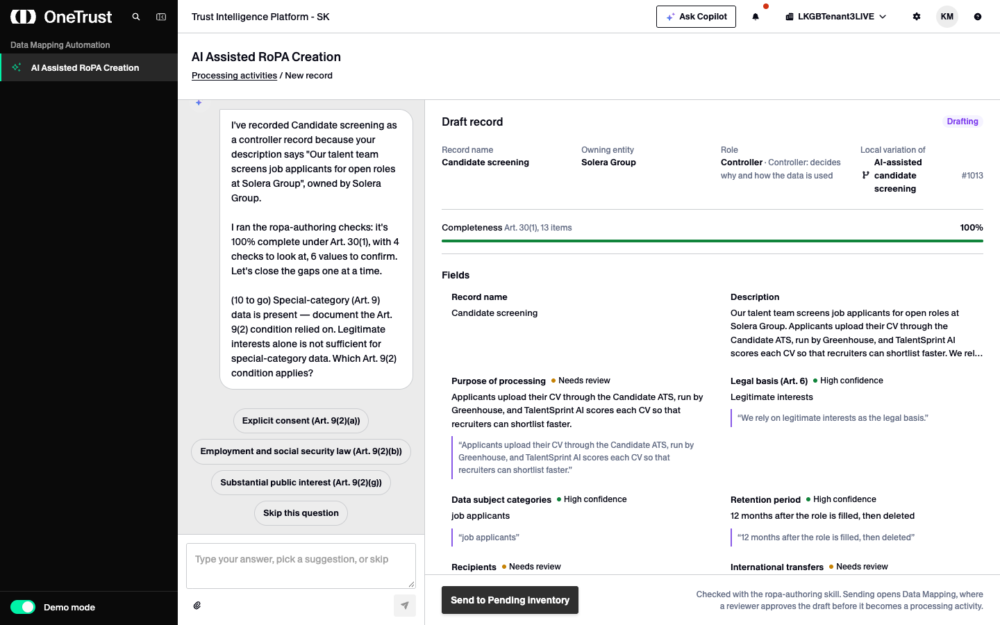
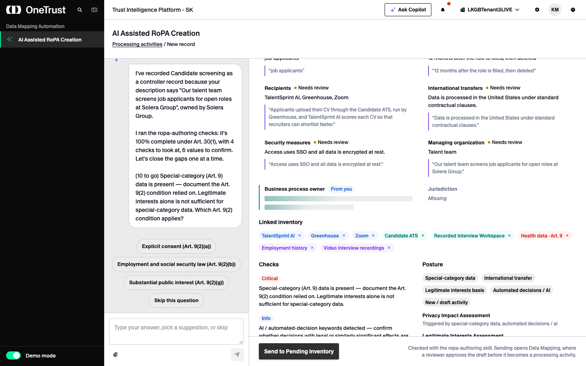
--oc-motion-state-active) for 1.1 s, then its new value.Layout
| Split | Chat 30% (min 260px) · draft 70%. Page header "AI Assisted RoPA Creation" with breadcrumb "Processing activities / New record". |
|---|---|
| Draft panel | Container query at 640px: fields in two columns, Checks and Posture side by side. Footer pinned with the send action. |
| Draft badge | Not started · Creating · Possible duplicate · Drafting · Ready to send · Sent · Not created. |
| Basics | Record name, Owning entity (full group path), Role with detail, plus "Local variation of" or "Duplicate check" after a duplicate decision. |
| Completeness | oc-progress sm: success, or warning below 80% with "Below 80%: the dashboard flags the record as incomplete." Art. 30(1) scores 13 items; Art. 30(2) (processor) 7. |
| Field | Label, then "Asking now" (purple), "From you" (blue), "Inherited" (teal) or an oc-status confidence band; value; evidence quote for AI values; "Missing" or "Skipped. Left for the reviewer." otherwise. |
| Below fields | Linked inventory (removable tags, red for Art. 9 data, "· not in inventory"), Checks (Critical / Warning / Info with any recorded answer), Posture (conditions, required assessments with owner, review cadence). |
Conversation flow
- Describe. A reply starts after 900 ms "thinking" and streams at 18 ms a word (
[ocStream]). Under 60 characters the assistant asks for more and nothing is created. - Extract. The reply states how many values and linked items it found; every value quotes its source sentence.
- Duplicate check runs next (below). With no likely duplicate it says so and opens record details.
- Record details (name → group entity → role). Continue is disabled until name and entity are set.
- Questions in the skill's order: missing items, low-confidence values, warnings by severity, unresolved tools, then "Needs review" values to confirm ("Yes, that's right", "Confirm the rest").
- Ready. A summary of completeness, required assessments, open checks and review cadence, then Send to Pending inventory.
- Stop drops the partial reply and rolls back its changes so the user's message can be edited (OneCore shows Edit only on the newest user turn).
Duplicate check
Before a record is created, the draft is compared with the processing activities the user can view. A likely duplicate is shown in OneCore's caution yellow and needs a confirmed decision.
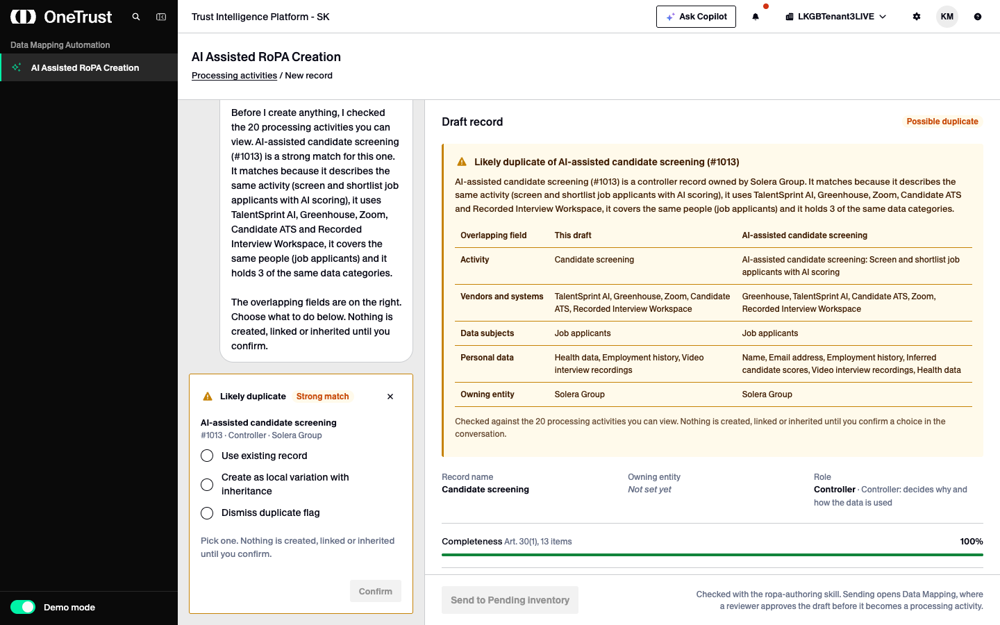
- Caution panel:
--oc-supportive-yellow-lightfill, 3px--oc-supportive-yellowleft edge,-ontext; title "Likely duplicate of {name} (#{id})" and the rationale. - Overlap table: Overlapping field · This draft · {matched record}. Rows only for real overlaps: Activity, Vendors and systems, Data subjects, Personal data, Clients, Owning entity.
- Draft badge "Possible duplicate" (warning).
- Decision card replaces the composer: yellow border, "Likely duplicate", strength badge (Strong / Likely match), the matched record, and a Hide button.
- Three choices in an
oc-radio-group. The selected one's consequence shows below; before that, "Pick one. Nothing is created, linked or inherited until you confirm." - Confirm is disabled until a choice is made. Confirming posts the choice as the user's message.
- Send to Pending inventory stays disabled until the duplicate is resolved.
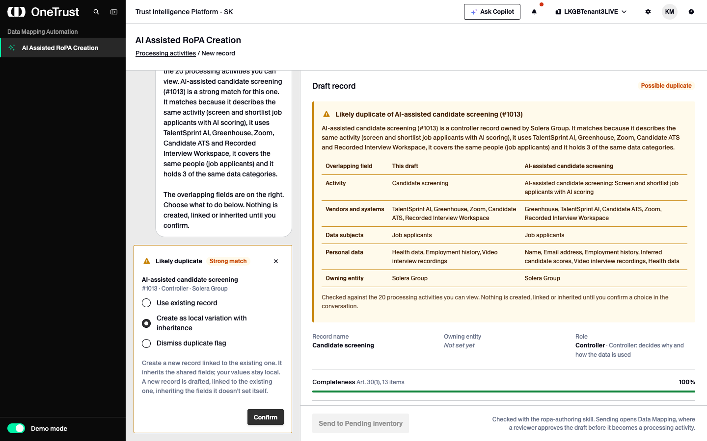
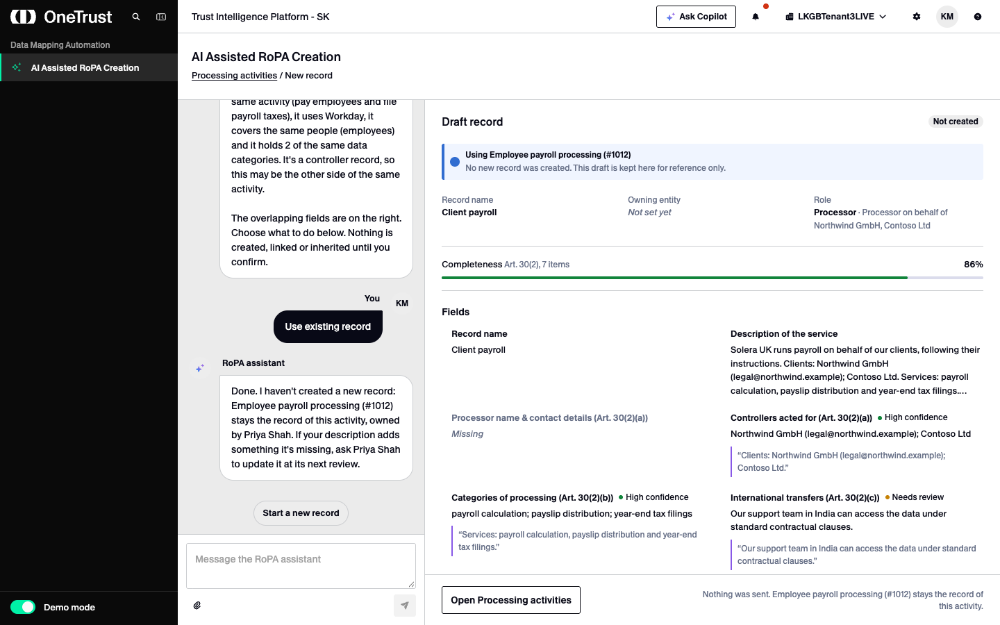
Matching
| Signal | Weight | Measured as |
|---|---|---|
| Same activity | 0.40 | Topic words in name + description vs the record's name + purpose (best of 2 × Jaccard and share of the record's words covered). |
| Vendors and systems | 0.25 | Shared ÷ the shorter list. |
| Data subjects | 0.15 | Shared ÷ the longer list. |
| Personal data | 0.10 | Shared ÷ the longer list. |
| Clients | 0.10 | Processor records: shared controllers. |
| Adjustments | ×0.75 / +0.05 | Processor vs non-processor; same owning entity. |
Likely at 0.33+, Strong at 0.60+. Only the best match is shown. Only records the user can view are compared (prototype: every group entity except APAC); hidden records are never mentioned.
Decisions
| Choice | Result after Confirm |
|---|---|
| Use existing record | "No new record is created, and this draft is discarded." Phase ends; nothing is sent. |
| Create as local variation with inheritance | Draft linked to the record ("Local variation of"). It inherits the parent's purpose, legal basis, retention, data subjects, security and transfers (processing categories for processors) wherever it has no value of its own; those fields show "Inherited". Continues to record details. |
| Dismiss duplicate flag | New, unlinked record. "Not a duplicate of {name}. Flag dismissed by {user}." is noted for the reviewer. Continues to record details. |
Starting from a record (Processing activities → Create variation with AI) always matches that record, with "you started from this record" in the rationale.
Send to Data Mapping
Confirms, then hands the record to Data Mapping's Processing activities, where a reviewer approves it.
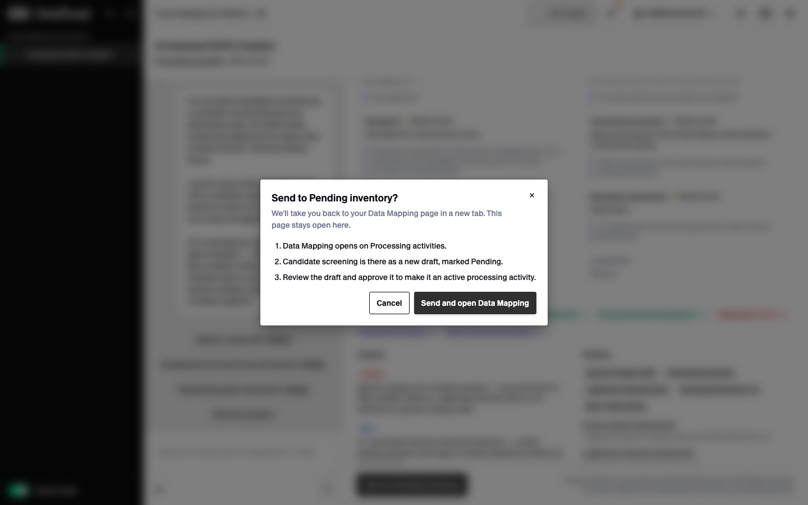
oc-dialog (md): "Send to Pending inventory?" / "We'll take you back to your Data Mapping page in a new tab. This page stays open here." Three numbered steps; Cancel (secondary) and "Send and open Data Mapping" (primary).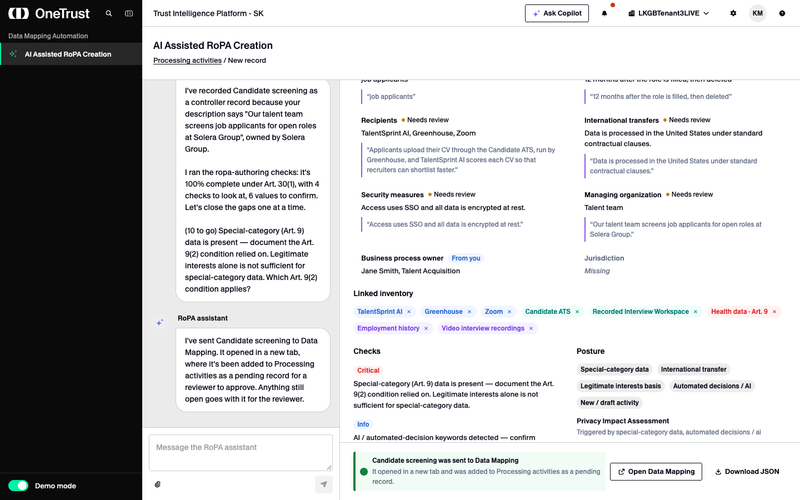
- Send is enabled once the record has a name and group entity, no reply is streaming, and no duplicate decision is pending.
- Confirming opens Data Mapping in a new tab, in the same click so popup blockers allow it. Escape, the close button, Cancel or an outside click send nothing.
- The package is JSON (
format: "onetrust.ropa-handoff", version 1): the record in the skill's shape with every evidence quote and relationship, the check results, notes, andduplicateCheckwhen one was decided. It travels base64url-encoded in the URL fragment #ropa-import=…, which browsers don't send to servers. - If the tab is blocked: "Your browser blocked the new tab. Open Data Mapping to add it to Processing activities."
- Data Mapping validates the package, adds a Pending row marked with a sparkle, shows a confirmation with "Show record", clears the fragment, and ignores the same package twice.
Prototype stand-ins
Behaviour that looks real in the prototype but needs a production implementation.
| Area | In the prototype | Production needs |
|---|---|---|
| AI | No model. Rule-based extraction (extract.ts, skill-draft.ts); replies are written in code and streamed with fixed delays. | A model call that loads the ropa-authoring skill at runtime, with the same evidence and confidence contract. |
| Storage | Drafts, History and handoffs live in each browser's localStorage. | Data Mapping API for drafts, sessions and records. |
| Records | 22 mock processing activities with hand-written profiles for duplicate matching. | The tenant's real RoPA, searchable server-side. |
| Permissions | Duplicate check ignores APAC records to stand in for view rights. | The user's real record-level permissions. |
| Handoff | JSON in a URL fragment to another app. | A server-side create in Pending inventory. |
| User | Signed-in user is fixed as Kevin Marshall. | The authenticated user. |
| Uploads | Plain text only (.txt, .md, .csv). | Document parsing (PDF, Word…). |
| Placeholders | Top bar controls, toolbar icons, Approve/Reject, bulk actions, column chooser. | Out of scope for this flow unless specified. |